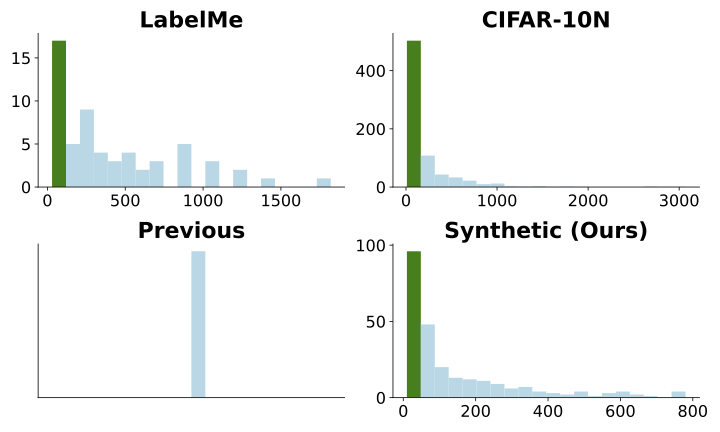
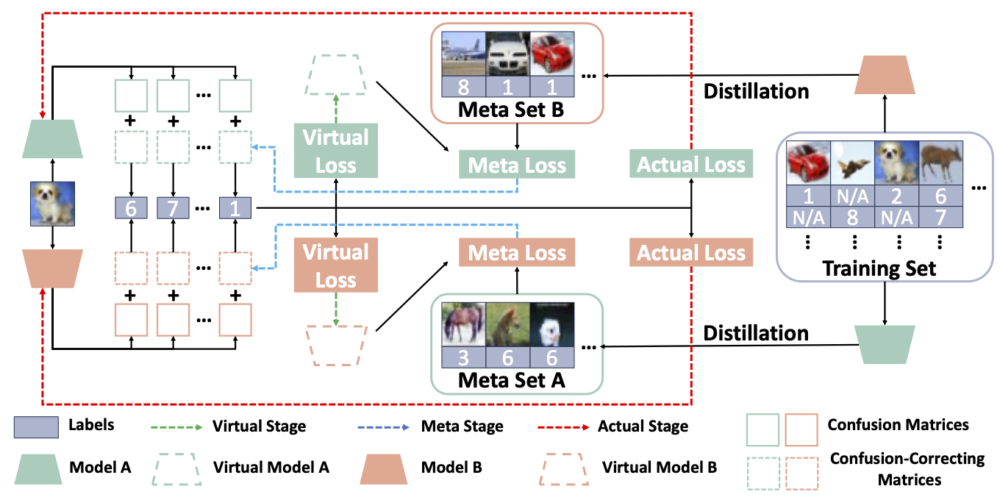

As the size of the datasets getting larger, accurately annotating such datasets is becoming more impractical due to the expensiveness on both time and economy. Therefore, crowd-sourcing has been widely adopted to alleviate the cost of collecting labels, which also inevitably introduces label noise and eventually degrades the performance of the model. To learn from crowd-sourcing annotations, modeling the expertise of each annotator is a common but challenging paradigm, because the annotations collected by crowd-sourcing are usually highly-sparse. To alleviate this problem, we propose Coupled Confusion Correction (CCC), where two models are simultaneously trained to correct the confusion matrices learned by each other. Via bi-level optimization, the confusion matrices learned by one model can be corrected by the distilled data from the other. Moreover, we cluster the ``annotator groups'' who share similar expertise so that their confusion matrices could be corrected together. In this way, the expertise of the annotators, especially of those who provide seldom labels, could be better captured. Remarkably, we point out that the annotation sparsity not only means the average number of labels is low, but also there are always some annotators who provide very few labels, which is neglected by previous works when constructing synthetic crowd-sourcing annotations. Based on that, we propose to use Beta distribution to control the generation of the crowd-sourcing labels so that the synthetic annotations could be more consistent with the real-world ones. Extensive experiments are conducted on two types of synthetic datasets and three real-world datasets, the results of which demonstrate that CCC significantly outperforms state-of-the-art approaches.
Previous crowd-sourcing methods synthesize labels with a evenly distributed label numbers, which is not consistent with real-world ones. To address this, we proposed to unbalance the label numbers with a Beta distribution.

Framework of CCC:

@inproceedings{zhang2024ccc,
title ={Coupled Confusion Correction: Learning from Crowds with Sparse Annotations},
author ={Hansong Zhang and Shikun Li and Dan Zeng and Chenggang Yan and Shiming Ge},
year ={2024},
booktitle={The 38th Annual AAAI Conference on Artificial Intelligence (AAAI)}
}